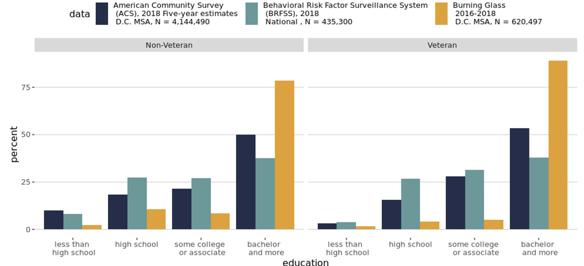

Data Benchmarking
Using external datasets to learn more about BGT resume data
In order to better understand the Burning Glass resume data, particularly in the context of veterans in the DC metro area, we wanted to benchmark it against other veteran- and career-related datasets to understand any differences in the populations. For more details about the data sources used here, see the Data section.
<<<<<<< ### Veterans Employment Outcomes (VEO) comparison with BGT data >>>>>>>
The following plot compares the percentage of veterans in a given career for veterans nationally (in the Veterans Employment Outcomes data) and veterans in the BGT data (for the DC Metropolitan Statistical Area). This shows that white-collar careers like public administration are represented much more for the BGT veteran subset than for national veteran career outcomes. Additionally, careers like construction are under-represented in the BGT data compared to the national estimates of veteran career outcomes.

Three-Way Education Comparison
The following plot is a three-way comparison between Behavioral Risk Factor Surveillance System (BRFSS), American Community Survey (ACS), and Burning Glass Technologies (BGT) data, for both the veteran and non-veteran population. The BRFSS data is on a national level, while the ACS and BGT data cover the DC MSA. For both the veteran and non-veteran population, BGT data overrepresents individuals with bachelor's degrees and higher compared to the ACS and BRFSS estimates.
LEHD Origin-Destination Employment Statistics (LODES) Comparison with BGT data
The following plot compares employment outcomes in the DC MSA to the employment outcomes in the BGT data (for veterans in the DC MSA). It shows that white collar careers such as public administration are again overrepresented in the BGT data compared to LODES data, while careers such as construction are underrepresented compared to LODES data.
c74e95cf16d530281d5733e617cf7885e9d9a7cc